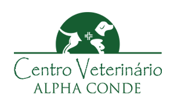
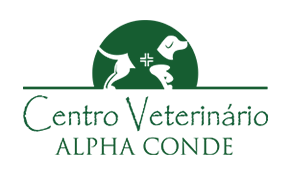

Seguras


Cuidar da saúde do seu novo companheiro é essencial para garantir uma vida longa, feliz e cheia de
carinho.
Por isso, oferecemos uma rede de serviços veterinários pensada especialmente para animais adotados, com
atendimento de qualidade, acessível e feito com amor. Aqui, você encontra desde consultas e vacinas até
castração e orientações sobre os primeiros cuidados — tudo para que seu pet tenha o melhor começo possível
em seu novo lar.

Diferente dos humanos, cães e gatos não costumam demonstrar dor de forma óbvia. Mudanças no comportamento, como apatia, agressividade repentina, falta de apetite ou dificuldade para se movimentar, podem ser sinais de que algo está errado. Fique atento e procure um veterinário ao notar qualquer alteração incomum.
A vacinação é essencial para proteger seu pet de doenças graves e contagiosas. Para cães, as vacinas mais importantes incluem a V10 e a antirrábica. Para gatos, a tríplice felina e a antirrábica são fundamentais. O ideal é seguir um calendário de vacinação com orientação veterinária, especialmente no primeiro ano de vida.
Após a castração, o pet precisa de um ambiente tranquilo para se recuperar. É importante evitar que ele lamba os pontos e seguir as instruções do veterinário quanto à medicação e alimentação. O uso de colar elizabetano e o acompanhamento da cicatrização são fundamentais para uma recuperação segura e rápida.
A alimentação correta é a base da saúde do seu animal. Rações específicas para a idade, porte e necessidades do pet ajudam a prevenir doenças e manter o peso ideal. Evite dar comida de humanos, especialmente alimentos gordurosos, temperados ou tóxicos para cães e gatos, como chocolate, uva e cebola.
Se seu pet estiver doente, é essencial criar um ambiente calmo e confortável. Deixe água e comida ao alcance, evite barulhos e permita que ele descanse bastante. Tapetes antiderrapantes, caminhas aconchegantes e acesso fácil ao banheiro são boas medidas. E, claro, siga à risca as orientações do veterinário.
 

Endereço: Av. Babita Camargos, 1295 - Loja 03 - Cidade Industrial, Contagem - MG, 32210-180
☎ : 03130797389
Endereço: R. Padre Adelino, 1811 - Quarta Parada, São Paulo - SP, 03303-000
☎ : 01126051126
Endereço: R. Capricórnio, 64 - Alphaville Conde I, Barueri - SP, 06473-005
☎ : 01141938231